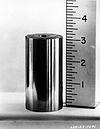

cesium-137

Has synonym(s): caesium-137, radiocaesium, radiocesium
Definition: Caesium-137 (13755Cs), cesium-137 (US), or radiocaesium, is a radioactive isotope of caesium that is formed as one of the more common fission products by the nuclear fission of uranium-235 and other fissionable isotopes in nuclear reactors and nuclear weapons. Trace quantities also originate from spontaneous fission of uranium-238. It is among the most problematic of the short-to-medium-lifetime fission products. Caesium-137 has a relatively low boiling point of 671 °C (1,240 °F) and is volatilized easily when released suddenly at high temperature, as in the case of the Chernobyl nuclear accident and with atomic explosions, and can travel very long distances in the air. After being deposited onto the soil as radioactive fallout, it moves and spreads easily in the environment because of the high water solubility of caesium's most common chemical compounds, which are salts. Caesium-137 was discovered by Glenn T. Seaborg and Margaret Melhase.
Source: Wikipedia
Wikipedia Page (Something wrong with this association? Let us know.)
Wikidata Page (Something wrong with this association? Let us know.)